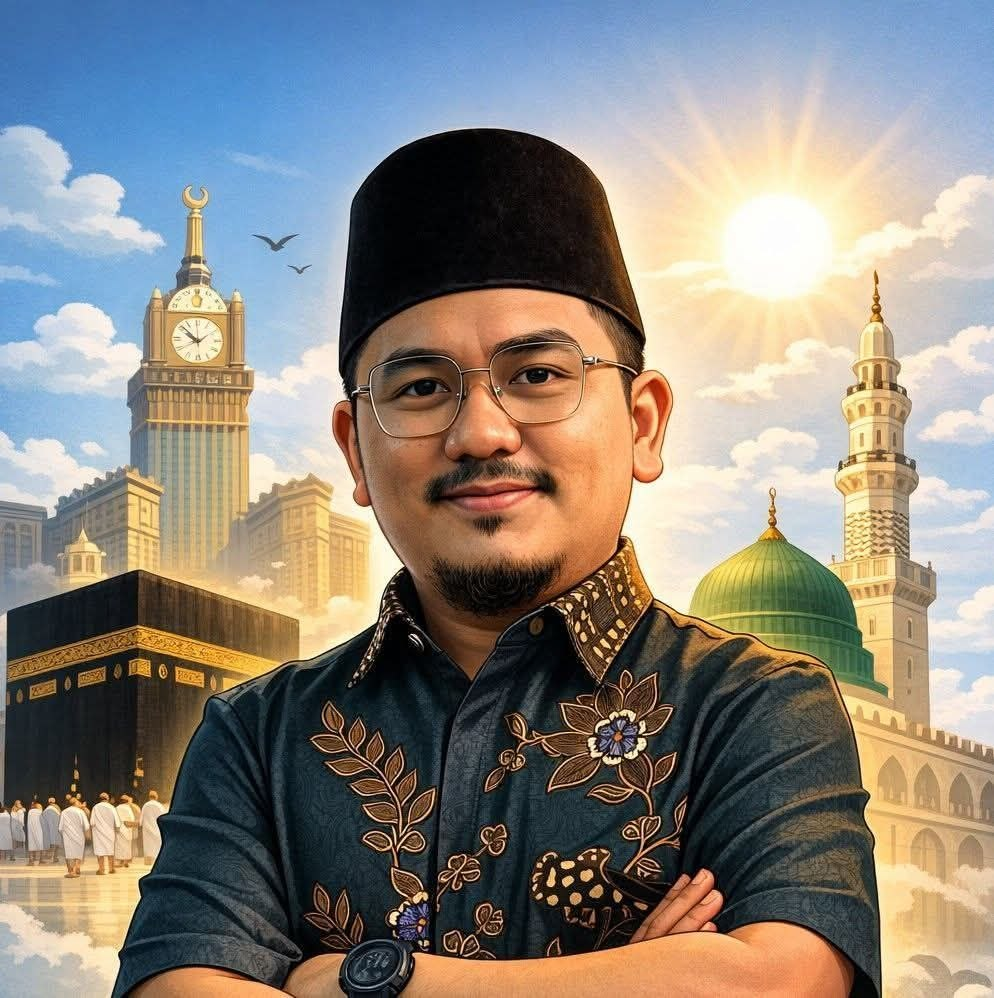

Pegawai Syariah • Mutawwif Umrah • Pembimbing Haji & Umrah • Penceramah
Membimbing Ummah Dengan Ilmu, Hikmah dan Integriti.
Fiqh • Al-Quran & Tajwid • Haji & Umrah • Halal • Falak • Kekeluargaan Islam
Hubungi SayaSeorang profesional Syariah yang aktif dalam bidang dakwah, pendidikan Islam, audit syariah, pematuhan syariah, pembangunan insan, pengurusan program dan khidmat masyarakat. Berpengalaman sebagai Pegawai Syariah Hospital PUSRAWI, Mutawwif Umrah, Pembimbing Haji serta penceramah jemputan di pelbagai institusi dan organisasi.
Audit Syariah, Pematuhan Syariah, Wakalah dan Program Islamik.
Membimbing dan mengurus jemaah umrah.
Lembaga Tabung Haji.
Program TH-USIM.
JAKIM - UKM.
Program dakwah dan pendidikan Islam.
Masjid, surau, hospital, sekolah, universiti dan korporat.
Ceramah, forum, kuliah dan tazkirah.
Kursus, bimbingan dan latihan praktikal.
Latihan, konsultasi dan audit syariah.
+6019-4138743
syedsyuk.official@gmail.com
Shah Alam, Selangor
WhatsApp Sekarang